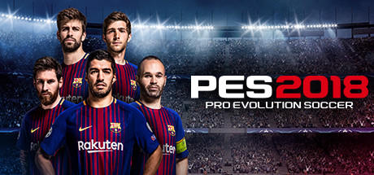
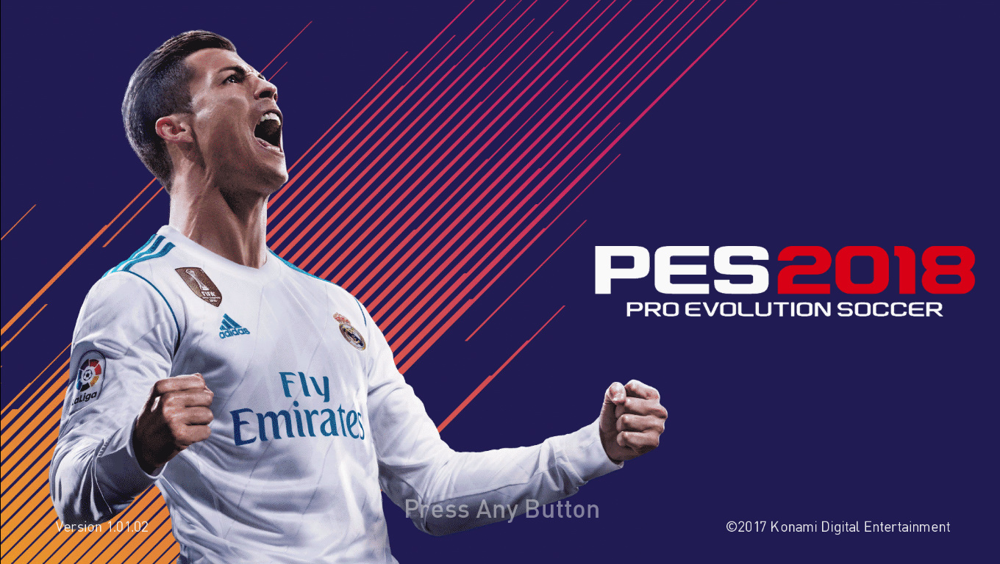

|  |  |
Sebelum dikenal dengan nama PES (Pro Evolution Soccer), game ini dulu dikenal dgn nama Winning Eleven yang dirancang sekaligus dipublikasikan oleh Konami pada tahun 1996. Tidak perlu menunggu waktu lama bagi WE untuk disukai masyarakat luas, khususnya Indonesia. Gameplay yang dihadirkan benar-benar dirasa berbeda karena pemain seakan lebih ‘bebas’ dalam mengendalikan pemain dibandingkan saingannya saat itu, FIFA, Sensible Soccer atau pun Actua Soccer. Sejak suksesnya Winning Eleven dipasaran, Konami akhirnya berkomitmen untuk terus memproduksi video game yang satu ini dari tahun ke tahun hingga sekarang.
Puncak kejayaan Winning Eleven atau PES berada di tahun ini. Pada tahun 2000 keatas, konsol yang sedang gencar menjadi tren adalah PlayStation One dan Playstation 2. Seri Winning Eleven pun telah sampai pada judul Winning Eleven 2000. Seri tersebut tepatnya dirilis pada tahun 2001. Pada tahun 2001, sudah muncul lima seri game Winning Eleven. Disini masalah mulai terjadi. Konami seakan tidak terus berevolusi dan mengikuti jejak video game lainnya. Selain grafis, nama pemain dan perubahan komposisi dari tiap tim, baik negara maupun klub sepak bola, tidak ada hal signifikan lain yang terjadi dalam Winning Eleven 2000. Mode yang dimiliki masih sama, begitu pun dengan aturan main. Berbeda dengan FIFA yang dianggap kurang sukses kala itu. Lewat EA Sports mereka terus merancang formula agar video gamenya menjadi favorit. Beberapa kabar menyebutkan bahwa pada tahun 2000an, Konami tidak memiliki game engine yang baik dan mumpuni sehingga Winning Eleven tertinggal jauh. Terlebih lagi masalah lisensi yang tidak pernah mereka dapatkan hingga sekarang. Pada era ini pula, Winning Eleven mulai memperkenalkan nama Pro Evolution Soccer kepada para fansnya.
PES 2010 juga merupakan seri pertama yang hadir untuk platform mobile. PES 2010 hadir untuk platform iOS pada bulan Juni 2010. Terakhir, PES 2017 dirilis pada bulan September 2016 kemarin. Dalam serinya kali ini, PES 2017 menambahkan fitur Match Analysis atau yang lebih dikenal dengan Versus Data. Fitur ini dirasa cukup penting bagi para pemain, karena Versus Data memungkinkan pemain untuk mengetahui kelemahan calon lawannya, sehingga bisa memakai strategi yang tepat. PES 2017 dianggap sukses dan mendapatkan berbagai respon positif. Melihat sekarang, peralihan generasi konsol sedang terjadi lagi. Setelah Nintendo Switch akan rilis bulan Maret nanti, Microsoft akan meluncurkan Project Scorpio pada tahun ini. Seharusnya Konami sudah mampu untuk membaca hal ini dan bersiap untuk menyambut konsol generasi terbaru agar kesalahan yang sama pada era awal tidak terulang lagi dan akhirnya PES benar-benar bisa kembali jaya dan digemari oleh banyak orang seperti dahulu.